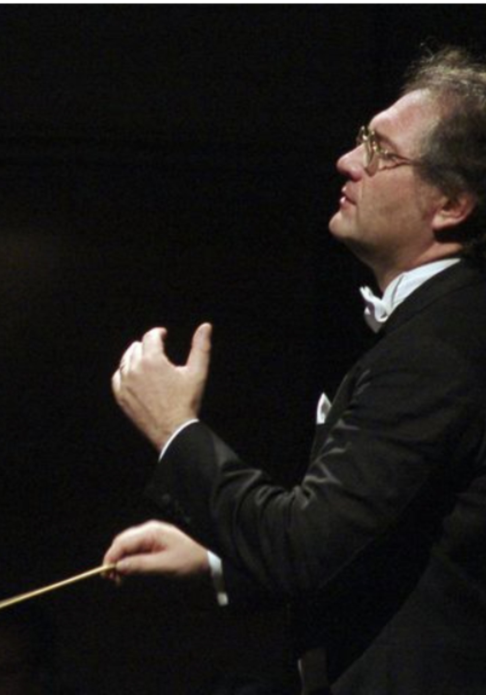
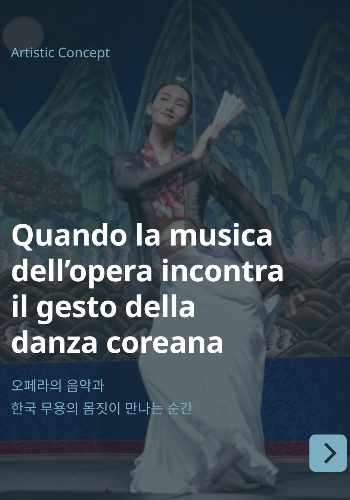
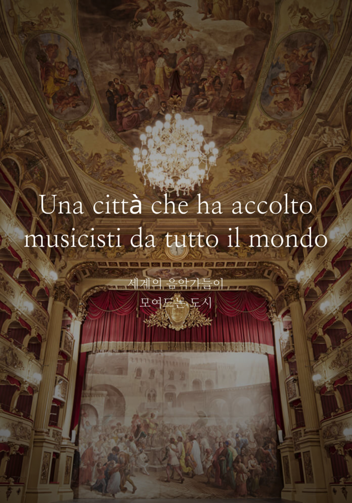

Elena Jun
Opera coach e Presidente della sede centrale di Seoul dell'Associazione dei Coach d'Opera della Corea, firma il concept artistico con prestigio e autorevolezza, imprimendo al progetto una chiara statura internazionale.

Una rara occasione a Perugia
La notte irripetibile di Leo Nucci arriva al Teatro Morlacchi mercoledì 15 aprile 2026, alle ore 20:30. Non è soltanto un concerto: è il genere di appuntamento che restituisce alla città il senso pieno della grande vita culturale. Le leggende passano di rado. Non rimandare.
Per la città
Ci sono eventi che non si limitano a occupare una data in calendario, ma entrano subito nell'immaginazione di una città. L'arrivo di Leo Nucci al Teatro Morlacchi appartiene a questa categoria: un incontro raro, prestigioso, capace di richiamare il pubblico locale, gli amici, le famiglie, gli amanti dell'opera e chiunque riconosca il valore delle occasioni autentiche.
Perugia ascolta una leggenda in una cornice che le appartiene profondamente. È un invito elegante, autorevole, emotivo: una notte di grande opera da vivere dal vivo, non da rimandare.
Leo Nucci
Leo Nucci è uno di quei nomi che non hanno bisogno di presentazioni ridondanti. La sua arte ha attraversato i grandi teatri del mondo, imponendosi per intensità interpretativa, autorevolezza musicale e una presenza scenica che continua a emozionare con rara immediatezza.
Averlo a Perugia significa offrire alla città qualcosa di più di un concerto: un vero incontro con una figura che appartiene alla storia viva dell'opera italiana. Per chi ama la musica, esserci vorrà dire custodire un ricordo destinato a durare.
Carlo Palleschi
Il Maestro Carlo Palleschi, direttore d'orchestra di riconosciuto prestigio e profondamente legato alla città di Perugia, accompagnerà Leo Nucci al pianoforte in questa serata speciale. La sua presenza conferisce al concerto una risonanza ancora più intima e significativa per il pubblico locale.
A rendere questo incontro ancora più prezioso è la lunga amicizia artistica che lo lega a Leo Nucci. Sul palcoscenico non si vedrà soltanto una collaborazione musicale, ma una complicità maturata nel tempo, percepibile in ogni gesto e in ogni respiro dell'esecuzione.

Un ponte culturale tra Italia e Corea
Opera coach e Presidente della sede centrale di Seoul dell'Associazione dei Coach d'Opera della Corea, firma il concept artistico con prestigio e autorevolezza, imprimendo al progetto una chiara statura internazionale.
Direttore della Filiale di Perugia dell'Associazione dei Coach d'Opera della Corea, accompagna il radicamento cittadino di un'iniziativa che unisce respiro internazionale e presenza viva nel tessuto culturale locale.
La danza tradizionale coreana di Kim Chaehyeon apre la Parte I e la Parte II con eleganza e suggestione; la voce narrante di Pacifica Artuso accompagna il concerto con misura, sensibilità e intensità teatrale.


Il luogo
Il fascino del Teatro Morlacchi non è un semplice sfondo, ma parte integrante dell'esperienza. Entrare in sala, prendere posto e ascoltare una leggenda dell'opera in uno dei luoghi più simbolici della città significa vivere Perugia nella sua dimensione più alta, elegante e memorabile.
Per chi ama la cultura, questa è la forma più raffinata di una serata condivisa: una presenza importante, un teatro storico, un pubblico che sa riconoscere il valore di ciò che accade.
Locandina del concerto
La locandina riassume la forza di questo appuntamento: il nome di Leo Nucci al centro, la presenza del Maestro Carlo Palleschi, il progetto culturale internazionale e l'eleganza di una serata costruita come un vero evento per Perugia.
Cliccare sulla locandina significa raggiungere subito la pagina di acquisto. Una scelta semplice, naturale, coerente con il valore dell'occasione.
Informazioni pratiche
Acquisto possibile anche la sera stessa del concerto al Teatro Morlacchi, salvo disponibilità.
Una rara occasione. Una serata da non perdere. Perugia ascolta una leggenda in una notte che promette eleganza, emozione e memoria. Le leggende passano di rado: non rimandare.